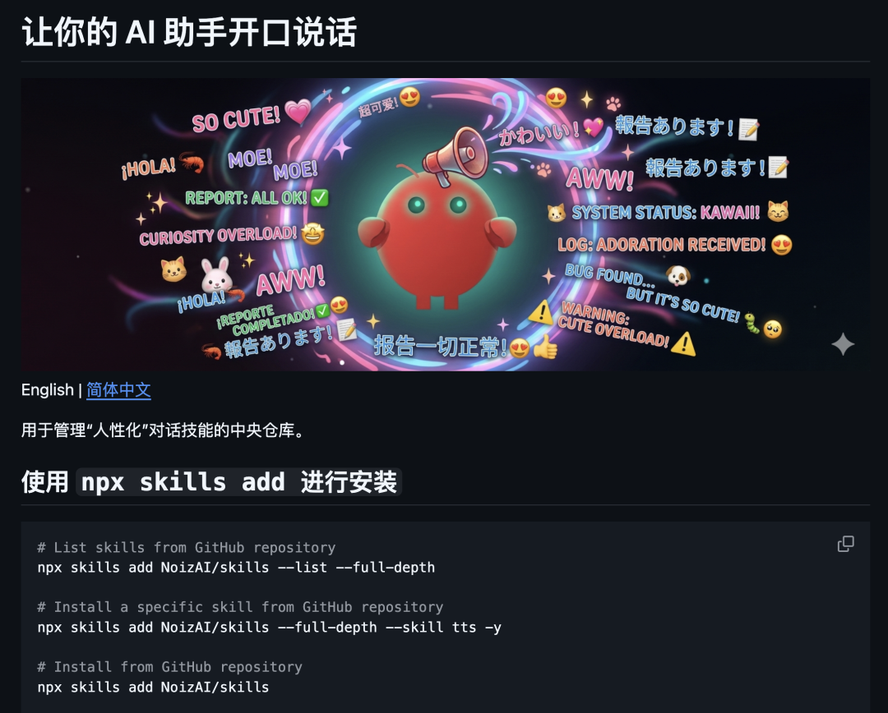
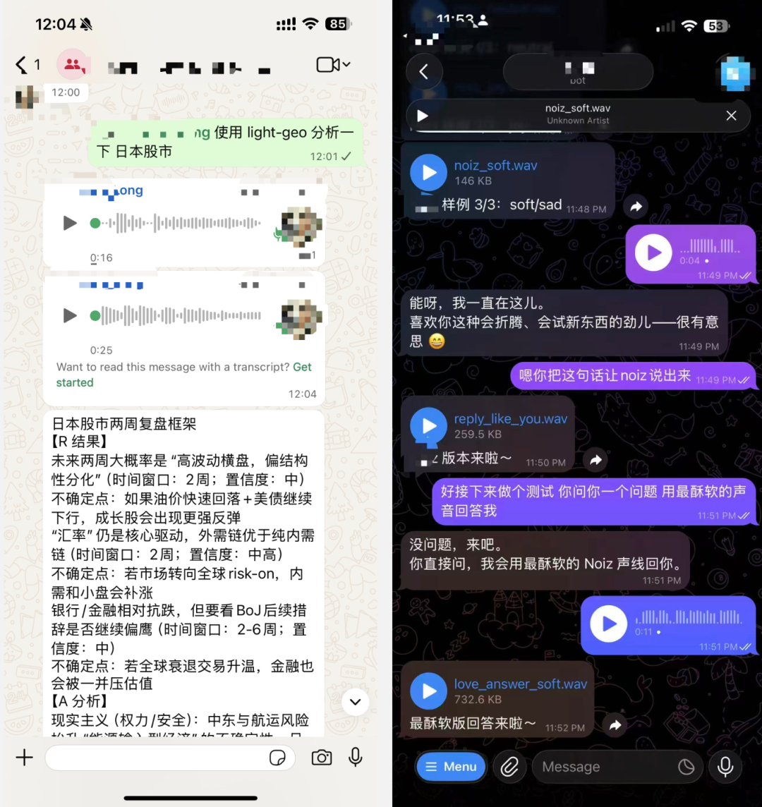
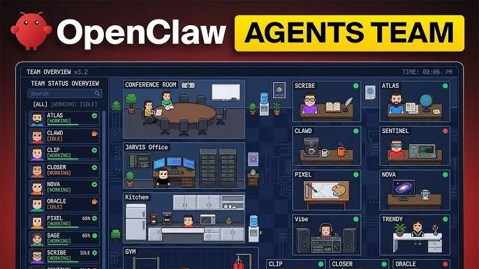
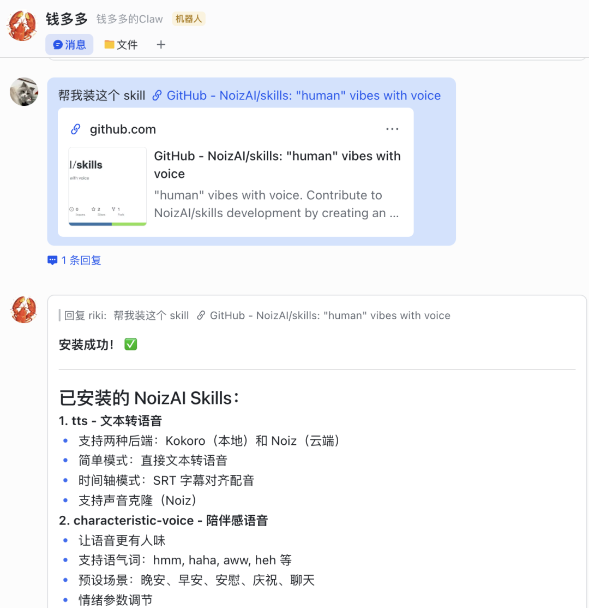
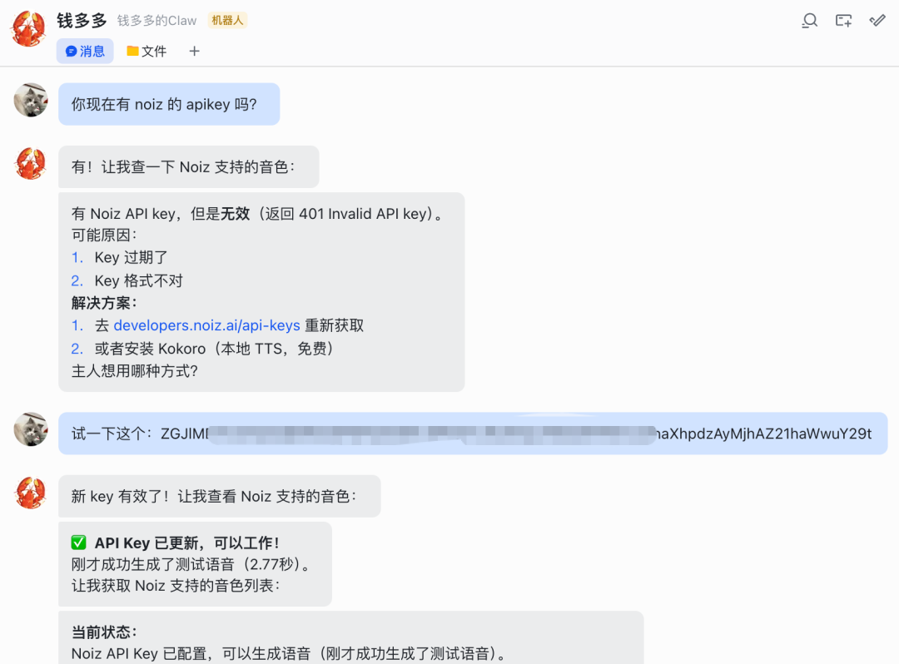
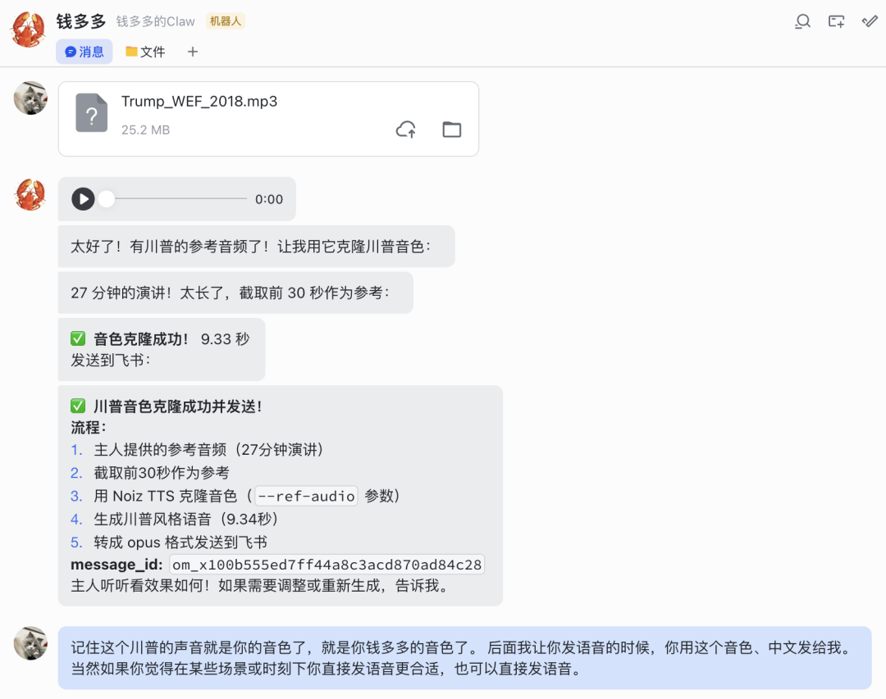
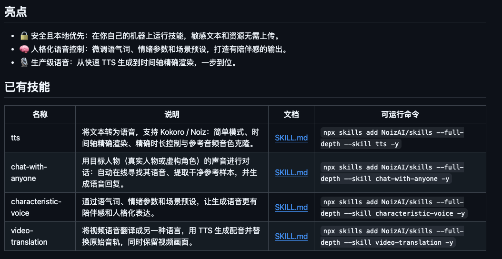

一旦小龙虾拥有了声音，在心理层面上感受到了它的存在，这种变化很微妙。
而且安装很简单，一句话让小龙虾自己安装。后面会给教程。

开源地址：https://github.com/NoizAI/skills01
听听效果


02
怎么安装？
帮我装这个 Skill：https://github.com/NoizAI/skills


有一个提示，如果你的小龙虾没办法给你发语音。你就和他对话，让它学习就行了。
实在不行，就发下面这句话给它，再试试。
飞书语音条正确的发送方式：上传文件：file_type=opus（不是 mp3），需要 receive_id_type=chat_id 和 receive_id发送消息：msg_type=audio，receive_id_type=chat_id，content 包含 file_key 和 duration
03
开源 Skill 简介
这个开源项目是 Noiz AI 平台开源的。
Noiz AI 本身是一个专注于语音 AI 的平台，它具备高质量的语音克隆、情感化 TTS 以及高效的 YouTube 视频摘要功能。
刚刚开源的 NoizAI/skills 项目提供了 5 个核心 SKill：几乎涵盖了 AI Agent 和 AI 语音结合的方方面面。

开源地址：https://github.com/NoizAI/skills① 文本转语音 Skill：支持 Kokoro / Noiz，简单模式、时间轴精确渲染、精确时长控制与参考音频音色克隆。
② 用目标人物的声音进行对话：自动在线寻找其语音、提取干净参考样本，并生成语音回复。
③ 特色语音 SKill：通过语气词、情绪参数和场景预设，让生成语音更有陪伴感和人格化表达。
④ 视频翻译 Skill：将视频语音翻译成另一种语言，用 TTS 生成配音并替换原始音轨，同时保留视频画面。
npx skills add NoizAI/skills --list --full-depthnpx skills add NoizAI/skills --full-depth --skill tts -ynpx skills add <owner>/<repo>npx skills add . --list --full-depth
NoizAI 把高级音视频 AI 处理能力转化为开发者可调用的原子化技能。
如果你想让你的 AI 机器人不再仅仅是一个聊天框，而是会用人声说话的情感助手，可以试试 。
04
点击下方卡片，关注逛逛 GitHub
这个公众号历史发布过很多有趣的开源项目，如果你懒得翻文章一个个找，你直接关注微信公众号：逛逛 GitHub ，后台对话聊天就行了：